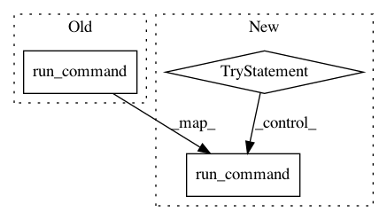

b428b0940c8ba6207e414542bc2ce90290b4a0a2,reframe/core/modules.py,TModImpl,_run_module_command,#TModImpl#,413
Before Change
def _run_module_command(self, *args):
command = [self._command, *args]
return os_ext.run_command(" ".join(command))
def _module_command_failed(self, completed):
return re.search(r"ERROR", completed.stderr) is not None
After Change
def _run_module_command(self, *args, msg=None):
command = [self._command, *args]
try:
completed = os_ext.run_command(" ".join(command), check=True)
except SpawnedProcessError as e:
raise EnvironError(msg) from e
if self._module_command_failed(completed):
raise EnvironError(msg) from SpawnedProcessError(completed.command,
completed.stdout,
completed.stderr,
In pattern: SUPERPATTERN
Frequency: 4
Non-data size: 3
Instances
Project Name: eth-cscs/reframe
Commit Name: b428b0940c8ba6207e414542bc2ce90290b4a0a2
Time: 2018-12-12
Author: samuel.omlin@cscs.ch
File Name: reframe/core/modules.py
Class Name: TModImpl
Method Name: _run_module_command
Project Name: horovod/horovod
Commit Name: 0cb02327269319e4280b7e523afd6a865c716188
Time: 2021-02-08
Author: github@enrico.minack.dev
File Name: test/single/test_service.py
Class Name: NetworkTests
Method Name: test_shutdown_during_request_basic_task
Project Name: enthought/chaco
Commit Name: 18443093850dfa6e8eb40721b21401ae2a508da2
Time: 2009-07-07
Author: GaelVaroquaux@651a555e-23ca-0310-84fe-ca9f7c59d2ea
File Name: setup.py
Class Name: MyDevelop
Method Name: run
Project Name: horovod/horovod
Commit Name: 0cb02327269319e4280b7e523afd6a865c716188
Time: 2021-02-08
Author: github@enrico.minack.dev
File Name: test/single/test_service.py
Class Name: NetworkTests
Method Name: test_exit_code